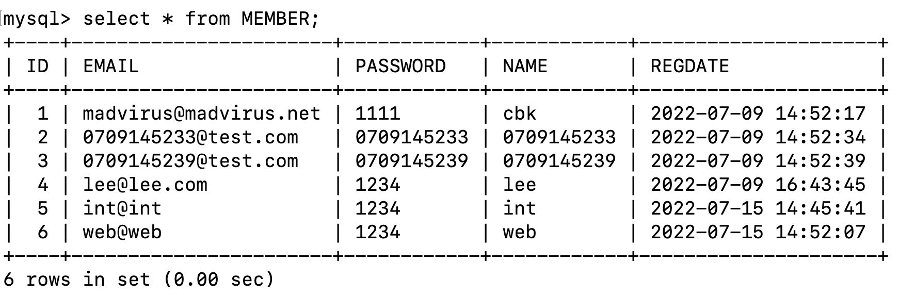
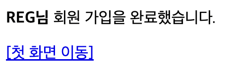

<meta charset="utf-8">
<html lang="ko">
<head>
    <link rel="stylesheet" type="text/css" href="./../style.css" />
    <title>Ch11. MVC 1 : 커맨드 객체</title>
</head>
<body id="tt-body-page" class="">
<div id="wrap" class="wrap-right">
    <div id="container">
        <main class="main ">
            <div class="area-main">
                <div class="area-view">
                    <div class="article-header">
                        <div class="inner-article-header">
                            <div class="box-meta">
                                <h2 class="title-article">Ch11. MVC 1 : 커맨드 객체</h2>
                                <div class="box-info">
                                    <p class="category">Web</p>
                                    <p class="date">2022-07-15 16:55:47</p>
                                </div>
                            </div>
                        </div>
                    </div>
                    <hr>
                    <div class="article-view">
                        <div class="contents_style">
                            <p data-ke-size="size16"><b>현재까지 한일:</b>&nbsp;</p>
<p data-ke-size="size16">/step1 페이지 에서 약관 동의 보여줌.</p>
<p data-ke-size="size16">약관 동의하지 않고 다음 단계 누르면 /step1 으로 리다이렉트.</p>
<p data-ke-size="size16">약관 동의하고 다음 단계 누르면 회원 가입 화면인 /step2 로 이동.</p>
<p data-ke-size="size16">&nbsp;</p>
<h2 data-ke-size="size26"><b>커맨드 객체를 이용해 요청 파라미터 사용하기</b></h2>
<p data-ke-size="size16">폼에서 전송한 데이터를 컨트롤러에서 처리할때는 이전처림 <b>@RequestParam 애노테이션을 사용해도 되고, HttpServletRequest</b> 객체를 사용해도 된다.&nbsp;</p>
<p data-ke-size="size16">&nbsp;</p>
<p data-ke-size="size16">하지만 두 방법 모두 요청 파라미터의 갯수가 증가할때마다, 일일히 해당 파라미터 값을 읽어오는 코드를 작성해야한다.&nbsp;</p>
<p data-ke-size="size16">&nbsp;</p>
<p data-ke-size="size16">이런 불편함을 줄이기 위해 스프링은&nbsp;<b>요청 파라미터의 값을 커맨드 객체에&nbsp;</b><b>담아주는 기능을 제공한다.&nbsp;</b><b></b></p>
<p data-ke-size="size16">&nbsp;</p>
<p data-ke-size="size16">다음 <b>RegisterController 클래스의 handleStep3() 메서드</b>를 보자.</p>
<pre id="code_1657864886177" class="java" data-ke-language="java" data-ke-type="codeblock"><code>	// 회원가입 form 데이터 받아서 처리하고 step3 (회원가입 완료 페이지) 이동 
	@PostMapping("/register/step3")
	public String handleStep3(RegisterRequest regReq)
	{
		try 
		{
			memberRegisterService.regist(regReq);
			return "register/step3";
		} catch(DuplicateMemberException ex) 
		{
			return "register/step2";
		}
	}</code></pre>
<p data-ke-size="size16">handleStep3() 메서드는 파라미터로 RegisterRequest 객체를 받고있다.</p>
<p data-ke-size="size16">RegisterRequest 클래스는 아래와 같다.&nbsp;</p>
<p data-ke-size="size16">&nbsp;</p>
<p data-ke-size="size16">&nbsp;</p>
<p data-ke-size="size16">다음 <b>RegisterRequest 클래스가 커맨드 객체로 이용된다.&nbsp;</b></p>
<pre id="code_1657864808825" class="java" data-ke-language="java" data-ke-type="codeblock"><code>package spring;

public class RegisterRequest
{
    private String email;
    private String password;
    private String confirmPassword;
    private String name;

    // getter, setter
    public String getEmail() {
        return email;
    }
    public void setEmail(String email) {
        this.email = email;
    }
    public String getPassword() {
        return password;
    }
    public void setPassword(String password) {
        this.password = password;
    }
    public String getConfirmPassword() {
        return confirmPassword;
    }
    public void setConfirmPassword(String confirmPassword) {
        this.confirmPassword = confirmPassword;
    }
    public String getName() {
        return name;
    }
    public void setName(String name) {
        this.name = name;
    }


    public boolean isPasswordEqualToConfirmPassword()
    {
        return password.equals(confirmPassword);
    }
}</code></pre>
<p data-ke-size="size16">RegisterRequest 클래스는 딱히 <b>특별한 클래스가 아니다.&nbsp;</b></p>
<p data-ke-size="size16">어떤 애노테이션도 붙어있지 않은 <b>그냥 변수들과 세터와 게터가 있는 클래스</b>다.</p>
<p data-ke-size="size16">&nbsp;</p>
<p data-ke-size="size16"><b>이 클래스의 객체를 handleStep3() 메서드에 파라미터로 전달하면 스프링이 해당 클래스의 세터를 확인하고, 해당 세터가 받는 파라미터</b></p>
<p data-ke-size="size16"><b>를 &lt;form&gt;에서 전달 받은 파라미터와 비교해서 값을 복사한다.&nbsp;</b></p>
<p data-ke-size="size16">&nbsp;</p>
<p data-ke-size="size16"><b>이렇게 스프링 MVC가 handleStep3() 에 전달할 RegisterRequest 객체를 생성하고, 해당 객체의 (RegisterRequest) 세터 메서드를 이용해 값을 복사하는 것이다.&nbsp;</b></p>
<p data-ke-size="size16">&nbsp;</p>
<p data-ke-size="size16">&nbsp;</p>
<p data-ke-size="size16">&nbsp;</p>
<p data-ke-size="size16"><b>RegisterController 클래스의 handleStep3() 메서드는</b> 폼에서 전달 받은 데이터를 기반으로&nbsp; 회원가입을 진행하고, 해당 회원 정보가 이미 존재 하면 (DuplicateMemberException) step2로 돌아가도록 한다.</p>
<p data-ke-size="size16">회원가입 과정에서 MemberRegisterService에 의존하게 되므로, <b>RegisterController는 MemberRegisterService에 의존한다.&nbsp;</b></p>
<p data-ke-size="size16">따라서 ControllerConfig 설정파일에서 의존을 주입해줘야 한다.&nbsp;</p>
<p data-ke-size="size16">&nbsp;</p>
<div data-ke-type="moreLess" data-text-more="더보기" data-text-less="닫기">
<div class="moreless-content-ignore">
<pre id="code_1657865426660" class="java" data-ke-language="java" data-ke-type="codeblock"><code>package config;

import org.springframework.beans.factory.annotation.Autowired;
import org.springframework.context.annotation.Bean;
import org.springframework.context.annotation.Configuration;

import controller.RegisterController;
import spring.MemberRegisterService;

@Configuration 
public class ControllerConfig 
{
	// MemberConfig.java에서 빈 객체로 추가됨   
	@Autowired
	private MemberRegisterService memberRegSvc;
	
	@Bean 
	public RegisterController registerController() 
	{		
		RegisterController controller = new RegisterController();
		controller.setMemberRegisterService(memberRegSvc);
		return controller;		
	}

}</code></pre>
</div>
</div>
<p data-ke-size="size16">&nbsp;</p>
<p data-ke-size="size16">회원가입 성공 페이지인 <b>step3.jsp</b>&nbsp;</p>
<div data-ke-type="moreLess" data-text-more="더보기" data-text-less="닫기">
<div class="moreless-content-ignore">
<pre id="code_1657865464511" class="java" data-ke-language="java" data-ke-type="codeblock"><code>&lt;%@ page contentType="text/html; charset=utf-8" %&gt;
&lt;%@ taglib prefix="c" uri="http://java.sun.com/jsp/jstl/core" %&gt;

&lt;!DOCTYPE html&gt;
&lt;html&gt;
&lt;head&gt;
	&lt;title&gt;회원가입&lt;/title&gt;
&lt;/head&gt;
&lt;body&gt;
	&lt;p&gt;회원 가입을 완료했습니다&lt;/p&gt;
	&lt;p&gt;&lt;a href="&lt;c:url value='/main'/&gt;"&gt;[첫 화면 이동]&lt;/a&gt;&lt;/p&gt;
&lt;/body&gt;
&lt;/html&gt;</code></pre>
</div>
</div>
<p data-ke-size="size16">&nbsp;</p>
<p data-ke-size="size16">&nbsp;</p>
<hr contenteditable="false" data-ke-type="horizontalRule" data-ke-style="style3" />
<p data-ke-size="size16">이제 회원가입을 진행해 보자.</p>
<p data-ke-size="size16">진행하기 전에 <b>mysql</b> 서버를 실행시켜야 한다.&nbsp;</p>
<p data-ke-size="size16">&nbsp;</p>
<p data-ke-size="size16">web@web 이메일로 step2 페이지에서 가입을 진행하면 다음과 같이 step3 페이지로 이동한다.</p>
<p><figure class="imageblock alignCenter" >
    <span data-lightbox="lightbox">
        
    </span>
    <figcaption>http://localhost:8080/sp5-chap11/register/step3</figcaption>
</figure></p>
<p data-ke-size="size16">&nbsp;</p>
<p data-ke-size="size16"><b>mysql 에서 MEMBER 테이블을 조회:&nbsp;</b></p>
<p><figure class="imageblock alignCenter" >
    <span data-lightbox="lightbox">
        
    </span>
    <figcaption></figcaption>
</figure></p>
<p data-ke-size="size16">web@web 회원이 추가됨.&nbsp;</p>
<p data-ke-size="size16">&nbsp;</p>
<p data-ke-size="size16">&nbsp;</p>
<p data-ke-size="size16">&nbsp;</p>
<hr contenteditable="false" data-ke-type="horizontalRule" data-ke-style="style3" />
<h2 data-ke-size="size26"><b>뷰 JSP 코드에서 커맨드 객체 사용하기</b></h2>
<p data-ke-size="size16">위에서 이용한 커맨드 객체를 그대로 JSP 코드에서 사용할수도 있다.</p>
<p data-ke-size="size16">현재 까지의 상황은 RegisterController 클래스의 handleStep3 메서드에 파라미터로 RegisterRequest 객체를 받은 상황이고, ReigsterRequest 에는 폼에서 전달한 데이터들이 담겨 있다.&nbsp;</p>
<p data-ke-size="size16">&nbsp;</p>
<p data-ke-size="size16">회원가입을 완료 후 가입한 대상의 정보를 회원가입 완료 화면 (step3)에서 보여주도록 해보자.</p>
<p data-ke-size="size16">이럴때 <b>RegisterRequest 객체를 그대로 사용할수 있다.</b></p>
<p data-ke-size="size16">&nbsp;</p>
<p data-ke-size="size16"><b>/register/step3.jsp</b></p>
<pre id="code_1657867078723" class="java" data-ke-language="java" data-ke-type="codeblock"><code>&lt;%@ page contentType="text/html; charset=utf-8" %&gt;
&lt;%@ taglib prefix="c" uri="http://java.sun.com/jsp/jstl/core" %&gt;

&lt;!DOCTYPE html&gt;
&lt;html&gt;
&lt;head&gt;
	&lt;title&gt;회원가입&lt;/title&gt;
&lt;/head&gt;
&lt;body&gt;
	&lt;p&gt;&lt;strong&gt;${registerRequest.name}님 &lt;/strong&gt;
	회원 가입을 완료했습니다.&lt;/p&gt; 
	&lt;p&gt;&lt;a href="&lt;c:url value='/main'/&gt;"&gt;[첫 화면 이동]&lt;/a&gt;&lt;/p&gt;
&lt;/body&gt;
&lt;/html&gt;</code></pre>
<p data-ke-size="size16">위 코드는 step3.jsp 파일이다.&nbsp;</p>
<p data-ke-size="size16">10행에서<b> ${registerRequest.name}</b> 으로 가입 대상의 이름을 출력한다.&nbsp;</p>
<p data-ke-size="size16">&nbsp;</p>
<p data-ke-size="size16">스프링 MVC는 커맨드 객체 (RegisterRequest) 의 첫 글자를 <b>소문자로 바꾼</b> 문자열을 뷰의 이름으로서 뷰에 전달한다.&nbsp;</p>
<p data-ke-size="size16"><b>즉 RegisterRequest 커맨드 객체는 registerRequest 로서 전달된다.</b></p>
<p data-ke-size="size16">따라서 위처럼 registerRequest.name 이면 RegisterRequest 커맨드 객체의 name 파라미터에 접근하는 것과 같다.&nbsp;</p>
<p data-ke-size="size16">&nbsp;</p>
<p><figure class="imageblock alignLeft" >
    <span data-lightbox="lightbox">
        
    </span>
    <figcaption>이름 REG 로 회원가입 완료</figcaption>
</figure></p>
<p data-ke-size="size16">&nbsp;</p>
<hr contenteditable="false" data-ke-type="horizontalRule" data-ke-style="style3" />
<h2 data-ke-size="size26"><b>커맨드 객체 사용 이름 변경 @ModelAttribute</b></h2>
<p data-ke-size="size16">뷰 코드(jsp)에서 사용할 커맨드 객체의 이름을 변경할수 있다.</p>
<p data-ke-size="size16">예를들어 RegisterRequest 커맨드 객체의 뷰에서 사용되는 이름은 기본적으로 첫 글자를 소문자로 바꾼 registerRequest 이지만 <b>@ModelAttribute 애노테이션을 이용하면 원하는 이름으로 바꿀수 있다.&nbsp;</b></p>
<pre id="code_1657867776386" class="java" data-ke-language="java" data-ke-type="codeblock"><code>	@PostMapping("/register/step3")
	public String handleStep3(@ModelAttribute("formData") RegisterRequest regReq)
	{}</code></pre>
<p data-ke-size="size16">&nbsp;</p>
<p data-ke-size="size16">&nbsp;</p>
<hr contenteditable="false" data-ke-type="horizontalRule" data-ke-style="style3" />
<h2 data-ke-size="size26"><b>스프링 MVC가 제공하는 커스텀 태그&nbsp;</b></h2>
<p data-ke-size="size16">스프링 MVC는 커스텀 태그 기능을 제공하는데, 커스텀 태그는 커맨드 객체의 값을 쉽게 출력하도록 해준다.</p>
<p data-ke-size="size16">다음은 기존의 <b>step2.jsp 를 커스텀 태그를 이용하도록</b> 바꾼 코드다.</p>
<div data-ke-type="moreLess" data-text-more="더보기" data-text-less="닫기">
<div class="moreless-content-ignore">
<pre id="code_1657869578723" class="java" data-ke-language="java" data-ke-type="codeblock"><code>&lt;%-- 입력 폼  --%&gt; 
&lt;%@ page contentType="text/html; charset=utf-8" %&gt;
&lt;%@ taglib prefix="form" uri="http://www.springframework.org/tags/form" %&gt;

&lt;!DOCTYPE html&gt;
&lt;html&gt;
&lt;head&gt;
    &lt;title&gt;회원가입&lt;/title&gt;
&lt;/head&gt;
&lt;body&gt;

	&lt;h2&gt;회원 정보 입력&lt;/h2&gt;
	&lt;form:form action="step3" modelAttribute="registerRequest"&gt;
	&lt;p&gt;
		&lt;label&gt;이메일:&lt;br&gt;
		&lt;form:input path="email" /&gt;
		&lt;/label&gt;
	&lt;/p&gt;
	&lt;p&gt;
		&lt;label&gt;이름:&lt;br&gt;
		&lt;form:input path="name" /&gt;
		&lt;/label&gt;
	&lt;/p&gt;
	&lt;p&gt;
		&lt;label&gt;비밀번호:&lt;br&gt;
		&lt;form:password path="password" /&gt;
		&lt;/label&gt;
	&lt;/p&gt;
	&lt;p&gt;
		&lt;label&gt;비밀번호 확인:&lt;br&gt;
		&lt;form:password path="confirmPassword" /&gt;
		&lt;/label&gt;
	&lt;/p&gt;
	&lt;input type="submit" value="가입 완료"&gt;
	&lt;/form:form&gt;

&lt;/body&gt;
&lt;/html&gt;</code></pre>
</div>
</div>
<p data-ke-size="size16">&nbsp;</p>
<p data-ke-size="size16">커스텀 태그는 결과적으로<b> html 태그를 만들어 주는 기능</b>을 한다.&nbsp;</p>
<p data-ke-size="size16">&nbsp;</p>
<p data-ke-size="size16"><b>&lt;form:form&gt;</b> 커스텀 태그는 action 속성은 그대로, <b>modelAttribute 속성</b>에서는 커맨드 객체의 이름을 지정하고 &lt;form&gt;&nbsp; html 태그를 생성한다.</p>
<p data-ke-size="size16">&nbsp;</p>
<p data-ke-size="size16"><b>&lt;form:input&gt;</b> 커스텀 태그는 path 속성으로 &lt;form:form&gt;에서 지정한 커맨드 객체의 속성을 &lt;input&gt; 태그의 value 속성으로 사용해 &lt;input&gt; 태그를 생성한다.</p>
<p data-ke-size="size16">결과적으로 위 step2.jsp의 &lt;form:input path="name" /&gt; 커맨드 태그는, 만약 지정한 커맨드 객체 (RegsterRequest)의 name 속성 값이 "스프링"이었다면 다음 html &lt;input&gt; 태그를 만들어낸다.&nbsp;</p>
<p data-ke-size="size16">&lt;input id="name" name="name" type="text" value="name"&gt;&nbsp;</p>
<p data-ke-size="size16">&nbsp;</p>
<p data-ke-size="size16">&nbsp;</p>
<p data-ke-size="size16">현재 step2.jsp 에서 커맨드 객체에 접근하고 있는데, 이를 위해서는 <b>step2 페이지 도달전에 해당 커맨드 객체가 존재해야 한다.&nbsp;</b></p>
<p data-ke-size="size16">RegisterController 클래스의 handleStep2() 메서드에서 <b>커맨드 객체를 다음과 같이 추가</b>해준다.</p>
<pre id="code_1657870993106" class="java" data-ke-language="java" data-ke-type="codeblock"><code>	@PostMapping("/register/step2")
	public String handleStep2(
			@RequestParam(value = "agree", defaultValue="false") Boolean agree, Model model)
	{
		 if(!agree) return "register/step1";
		 // step2 페이지 이동 전에 커맨드 객체 생성 
		 model.addAttribute("registerRequest", new RegisterRequest());
		// 약관 동의했다면 입력 폼 보여주도록 register/step2를 뷰 이름으로 리턴 
		return "register/step2";
	}</code></pre>
<p data-ke-size="size16">&nbsp;</p>
<p data-ke-size="size16">&nbsp;</p>
<p data-ke-size="size16">handleStep2 메소드의 파라미터로 Model 객체를 받고 addAttribute 메소드를 이용해 RegisterRequest를 추가한다.&nbsp;</p>
<p data-ke-size="size16">&nbsp;</p>
<p data-ke-size="size16">&nbsp;</p>
<p data-ke-size="size16">&nbsp;</p>
<p data-ke-size="size16">&nbsp;</p>
<p data-ke-size="size16"><span style="color: #555555;">출처 : 스프링5 프로그래밍 입문 (최범균 저)&nbsp;</span></p>
                        </div>
                        <br/>
                        <div class="tags">
                            #MVC #Spring 
                        </div>
                    </div>
                </div>
            </div>
        </main>
    </div>
</div>
</body>
</html>
